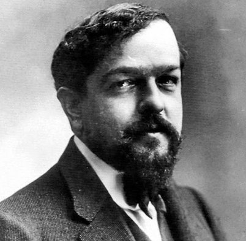
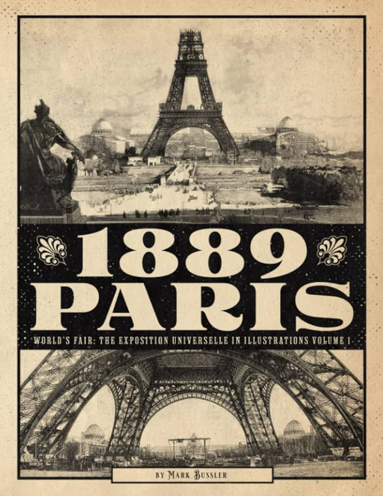
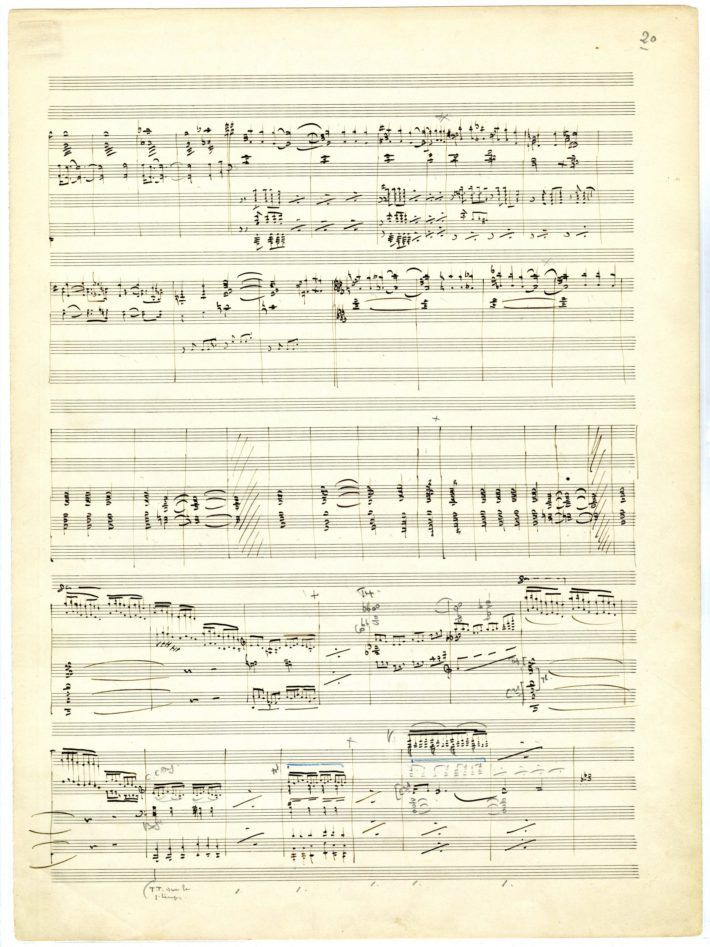

French composer, pioneer of Impressionism, known for evocative textures and innovative harmonies.
Claude Debussy was born in Saint-Germain-en-Laye, France, on August 22, 1862. Showing remarkable musical talent from an early age, he entered the Paris Conservatoire at ten, where he studied piano, composition, and music theory. Despite excelling in his formal training, Debussy often felt constrained by traditional academic methods and sought new ways of expression. This drive ultimately shaped his revolutionary approach to music.
Debussy drew inspiration from literature, poetry, and painting, as well as from non-Western music he encountered at the Paris Exposition of 1889. The exotic timbres and unique scales of gamelan music, for instance, influenced his harmonic and textural innovations. His music often focuses on mood and atmosphere rather than narrative or drama, a hallmark of his impressionistic style, even though Debussy himself disliked the term.
He faced personal and professional challenges, including health problems and complex romantic relationships. Despite these, Debussy produced a rich body of works that shaped early 20th-century music and inspired composers from Maurice Ravel to jazz musicians exploring new harmonies.

Debussy was inspired by the gamelan ensembles at the 1889 Paris Exposition.
Debussy’s compositional period bridges late Romanticism and early 20th-century modernism. While Romantic composers emphasized dramatic contrasts, Debussy explored tonal color, fluid rhythm, and subtle dynamics. He used modes, whole-tone scales, and unresolved dissonances to craft dreamlike textures and atmospheres. His innovations impacted subsequent generations, including Ravel, Stravinsky, and jazz artists seeking new harmonic possibilities.
By focusing on nuance, suggestion, and mood, Debussy redefined musical expression, establishing a style that prioritizes color and emotion over traditional form.

He experimented with harmony, rhythm, and tonal color to evoke mood and imagery.